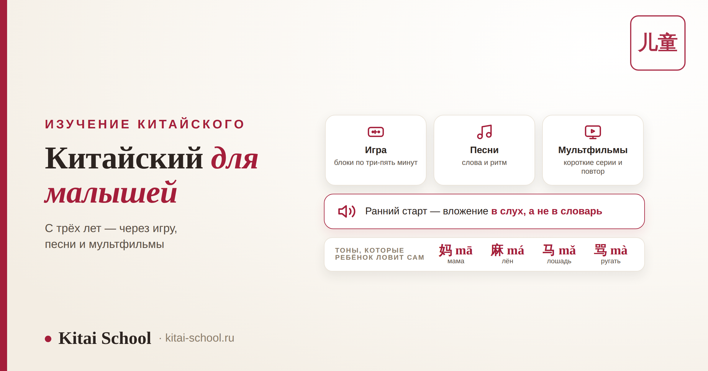
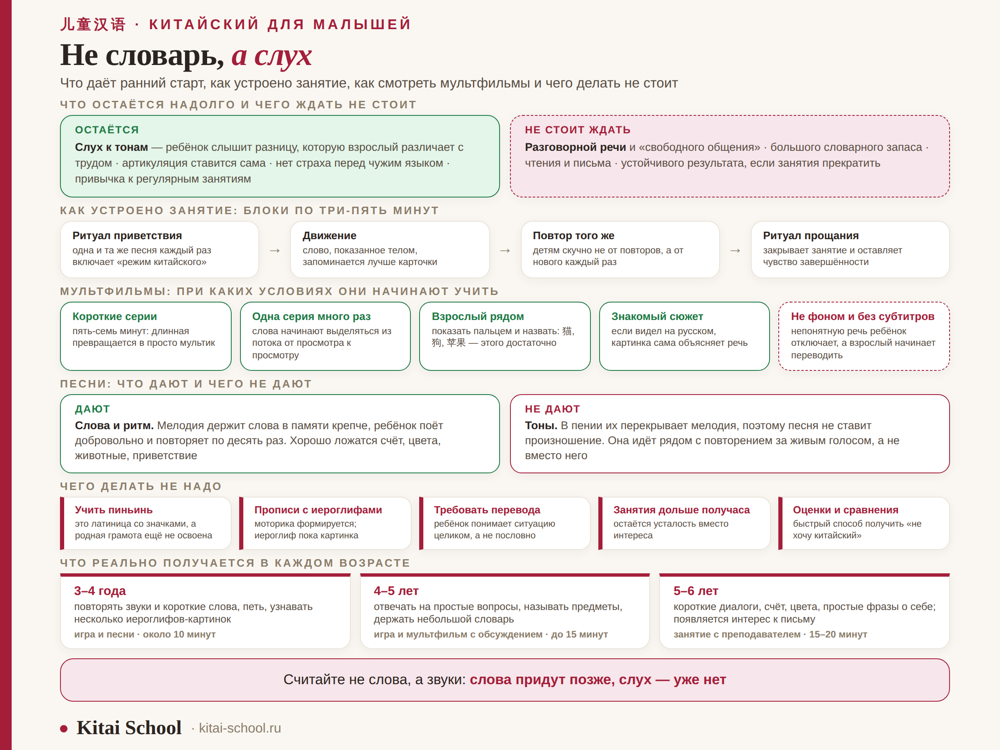

Изучение китайского
Китайский для малышей: как начать с трёх лет через игры, песни и мультфильмы


Родители, которые ищут китайский для дошкольников, обычно приходят с одним из двух ожиданий: либо «пусть заговорит», либо «наверное, ещё рано». Оба мимо. Дошкольник китайским не овладеет — и это нормально, потому что задача у раннего старта совсем другая и, если честно, более ценная: поставить слух. Дальше разберём, что ребёнок реально получает в три-шесть лет, как выглядит занятие, что делать с мультфильмами и песнями и как быть родителям, которые сами не знают ни слова.
В дошкольном возрасте ребёнок не «учит язык», а настраивает слух — и для китайского это особенно ценно, потому что тоны взрослым даются тяжело, а детям легко. Занятие длится десять-двадцать минут и состоит из коротких блоков. Мультфильм фоном не работает: нужны короткие серии, повторы и взрослый рядом. Песни дают ритм и слова, но не дают тоны — в пении их не слышно. Пиньинь и прописи до школы не нужны.
Что ребёнок получает в три года — и чего не получает
Начнём с честного, потому что от этого зависят все дальнейшие решения. Ждать от дошкольника разговорного китайского не стоит: словарный запас будет небольшим, фразы простыми, а через месяц без занятий половина забудется. Зато остаётся то, чего потом почти не догнать.
| Что остаётся надолго | Чего ждать не стоит |
|---|---|
| Слух к тонам: ребёнок слышит разницу, которую взрослый различает с трудом | Разговорной речи и «свободного общения» |
| Артикуляция: непривычные звуки ставятся сами, без постановки | Большого словарного запаса |
| Отсутствие страха перед чужим языком | Чтения и письма |
| Привычка к регулярным занятиям | Устойчивого результата без продолжения |
Отсюда практический вывод: ранний старт — это вложение в слух, а не в словарь. Если через год ребёнок знает тридцать слов, но безошибочно повторяет за диктором тон — это отличный результат, а не слабый. Обратная ситуация, к слову, встречается чаще и радует родителей больше, а стоит меньше.
Почему китайский — удачный язык для раннего старта
Звучит неожиданно: самый «сложный» язык — и вдруг для трёхлеток. Но сложным китайский делают ровно те вещи, которые мешают именно взрослым.
| Особенность языка | Взрослому | Ребёнку 3–6 лет |
|---|---|---|
| Тоны | приходится осознанно вслушиваться и контролировать высоту голоса | воспринимаются как мелодия и повторяются сами |
| Непривычные звуки | артикуляция уже закреплена родным языком | речевой аппарат ещё гибкий |
| Иероглифы | воспринимаются как система, которую надо разобрать | воспринимаются как картинки, и это работает |
| Отсутствие падежей и спряжений | помогает и тому, и другому | фраза собирается как конструктор |
Про иероглифы стоит сказать отдельно. В три-четыре года их не учат — их узнают, как узнают дорожные знаки. 山 — гора, 日 — солнце, 人 — человек: несколько простых знаков, показанных как картинки, дают ребёнку ощущение, что письмо — это не страшно. Почему многие иероглифы и правда рисунки, разобрано в статье про значение ключей.
Как устроено занятие с трёхлеткой
Главное отличие от занятия со школьником — не в содержании, а в форме. Дошкольник не может сидеть и слушать; он может играть, двигаться, петь и повторять.
| Элемент | Зачем он нужен |
|---|---|
| Ритуал приветствия | одна и та же песня или фраза каждый раз: включает «режим китайского» без объяснений |
| Блоки по три-пять минут | внимание держится недолго; смена деятельности важнее длительности |
| Движение | слово, показанное телом, запоминается лучше слова, показанного на карточке |
| Повтор одного и того же | детям не скучно от повторов — им скучно от нового каждый раз |
| Ритуал прощания | закрывает занятие и оставляет ощущение завершённости |
По времени ориентир такой: в три-четыре года — около десяти минут, в пять-шесть — пятнадцать-двадцать. И регулярность важнее длительности: пять коротких встреч с языком в неделю работают заметно лучше, чем одно длинное занятие в выходной. Именно так устроены наши занятия китайским для детей.

Из личного опыта
Ко мне пришла мама четырёхлетней девочки с претензией к предыдущему педагогу: «Мы занимаемся полгода, а она знает от силы двадцать слов». Я попросила девочку повторить за мной четыре слога с разными тонами — 妈, 麻, 马, 骂. Она повторила все четыре чисто, ни разу не задумавшись.
Я объяснила маме, что именно она сейчас увидела: её дочь сделала то, на что у взрослых студентов уходят месяцы. Двадцать слов — это ерунда, они добираются за пару недель в любом возрасте. А то, что девочка слышит и воспроизводит тон, — навык, который после десяти-двенадцати лет ставится уже трудом, а не само собой.
С тех пор на первой встрече с родителями дошкольников я всегда прошу их поменять мерку: считайте не слова, а звуки. Слова придут, когда ребёнок пойдёт в школу и научится учиться. Слух после — уже нет.
Мультфильмы: как смотреть, чтобы это работало
Самый частый родительский приём и самое частое разочарование. Китайские мультфильмы для малышей действительно работают — но не так, как хочется. Включить фоном и заниматься своими делами не даёт ничего: непонятную речь ребёнок отключает так же, как взрослый отключает радио в машине.
| Правило | Почему так |
|---|---|
| Короткие серии, пять-семь минут | длинная серия превращается в просто мультик |
| Одна и та же серия много раз | смысл достраивается от просмотра к просмотру, слова начинают выделяться из потока |
| Взрослый рядом | показать пальцем и назвать: 猫, 狗, 苹果 — этого достаточно |
| Знакомый сюжет | если ребёнок видел мультфильм на русском, картинка сама объясняет речь |
| Без русских субтитров | читать он ещё не умеет, а взрослый начинает переводить вместо того, чтобы называть |
Что смотреть: подойдут дублированные на китайский знакомые мультфильмы — например, 小猪佩奇 («Свинка Пеппа»), — и китайские детские сериалы вроде 超级飞侠 («Супер Крылья»). Критерий важнее конкретного названия: короткая серия, простая речь, понятная без слов картинка. И держите экранное время в разумных рамках — мультфильм здесь повод для общения, а не замена ему.
Песни: что они дают и чего не дают
Песни — лучший инструмент этого возраста, но у них есть особенность, о которой почти нигде не пишут. Хорошая новость: мелодия и рифма держат слова в памяти намного крепче, ребёнок поёт добровольно и повторяет по десять раз без всякого принуждения. А теперь честная оговорка.
В пении тоны не слышны: их перекрывает мелодия. Поэтому песня отлично даёт ритм, слова и удовольствие от языка, но не ставит произношение. Значит, песни не заменяют повторение за живым голосом или за диктором — они идут рядом. Как звучат тоны и почему они меняют смысл, разобрано в статье про корректировку произношения.
Что хорошо ложится на песни в этом возрасте: счёт до десяти, цвета, части тела, животные, приветствие и прощание. Кстати, китайский счёт от нуля до десяти — самое благодарное начало: он короткий, ритмичный и сразу «работает» в игре.
Если родители не знают ни слова по-китайски
Это не помеха, а очень частая ситуация. Важно только не браться за чужую роль.
| Работает | Не работает |
|---|---|
| Учить пять-десять слов вместе с ребёнком | Пытаться преподавать |
| Включать одни и те же песни и серии | Поправлять произношение на слух |
| Задавать вопросы: «а как будет собака?» | Требовать переводить всё подряд |
| Держать регулярность и время занятий | Проверять «сколько слов выучил» |
| Радоваться попытке, а не правильности | Сравнивать с другими детьми |
Про произношение отдельно и всерьёз: не поправляйте тоны, если сами их не слышите. Ошибка, повторённая за взрослым, закрепляется, а переучивать потом труднее, чем учить с нуля. Источником звука должен быть носитель — преподаватель, запись, мультфильм. Родительская задача другая и не менее важная: интерес и режим.
Чего делать не надо
Короткий список, который экономит нервы и деньги.
| Не надо | Почему |
|---|---|
| Учить пиньинь | это латиница со значками; ребёнок ещё не освоил родную грамоту |
| Писать иероглифы в прописях | мелкая моторика ещё формируется; иероглиф пока картинка, а не последовательность черт |
| Требовать перевода каждого слова | ребёнок понимает ситуацию целиком, а не пословно, и перевод ломает этот механизм |
| Заниматься дольше получаса | внимание кончается, и остаётся усталость вместо интереса |
| Ставить оценки и сравнивать | самый быстрый способ получить «не хочу китайский» |
Что реально можно в каждом возрасте
| Возраст | Что уже получается | Формат |
|---|---|---|
| 3–4 года | повторять звуки и короткие слова, петь, узнавать несколько иероглифов-картинок | игра и песни, около десяти минут |
| 4–5 лет | отвечать на простые вопросы, называть предметы, держать небольшой словарь | игра плюс мультфильм с обсуждением, до пятнадцати минут |
| 5–6 лет | короткие диалоги, счёт, цвета, простые фразы о себе; появляется интерес к письму | занятие с преподавателем, пятнадцать-двадцать минут |
После шести-семи лет картина меняется: ребёнок учится читать, и с этого момента подключаются пиньинь, письмо и системная работа. Как выглядит путь дальше, показано в статье про этапы изучения китайского. А если интересно, как устроено дошкольное образование в самом Китае, есть отдельный разбор детских садов.
Когда пора к преподавателю и что спросить у школы
Домашних песен и мультфильмов хватает примерно до того момента, когда ребёнок начинает задавать вопросы: «а как сказать…». Дальше нужен живой собеседник, который отвечает и поправляет.
| Вопрос | Что хотите услышать |
|---|---|
| Сколько длится занятие? | десять-двадцать минут для дошкольника, а не «академический час» |
| Как построено занятие? | короткие блоки со сменой деятельности, игра и движение |
| Учите ли пиньинь и письмо? | до школы — нет |
| Кто источник звука? | преподаватель с поставленным произношением или носитель |
| Как измеряете прогресс? | по речи и слуху, а не по количеству выученных слов |
Если ищете китайский для малышей в Москве или онлайн, ориентируйтесь на эти пять ответов: они отсеивают программы, где дошкольнику дают взрослую методику в уменьшенном виде. Наша программа китайского для детей построена именно так — с короткими блоками, песнями и игрой.
Частые вопросы (FAQ)
Во сколько лет можно начинать учить китайский?
Знакомить с языком можно с трёх лет, но «учить» в привычном смысле в этом возрасте не получится и не нужно. До школы работает не обучение, а среда: ребёнок слушает, повторяет, играет и поёт. Считать это подготовкой к будущим занятиям, а не самими занятиями, — самая здравая позиция. Ждать чтения, письма и осознанной грамматики стоит ближе к школьному возрасту.
Не запутается ли ребёнок, если учить китайский вместе с родным языком?
Нет. Дети спокойно держат в голове несколько языковых систем и довольно рано начинают понимать, с кем на каком языке говорить. Смешивание слов в одной фразе в раннем возрасте — нормальный этап, а не признак путаницы: он проходит сам. Единственное, что действительно мешает, — давление и требование переводить каждое слово.
Помогают ли китайские мультфильмы для малышей выучить язык?
Помогают, но только при определённых условиях. Мультфильм фоном не работает вообще: ребёнок отключает непонятную речь так же, как взрослый отключает радио. Работает другое — короткие серии, одна и та же серия много раз подряд и взрослый рядом, который показывает пальцем и называет предметы по-китайски. То есть мультфильм полезен как повод для общения, а не как замена ему.
Нужно ли учить пиньинь и писать иероглифы в три-четыре года?
Нет. Пиньинь — это латиница со специальными значками, и ребёнку, который ещё не освоил родную грамоту, она даёт только лишнюю нагрузку. Прописи в дошкольном возрасте тоже ни к чему: мелкая моторика ещё формируется, а иероглиф в этом возрасте гораздо полезнее показывать как картинку. Письмо и пиньинь спокойно приходят позже, когда ребёнок уже начал читать на родном языке.
С чего начать, если родители сами не знают китайского?
С отказа от роли учителя. Родителю не нужно преподавать и уж точно не нужно поправлять произношение — ошибки в тонах, повторённые за взрослым без слуха, потом переучивать труднее. Полезно другое: учить пять-десять слов вместе с ребёнком, включать одни и те же песни, смотреть мультфильм рядом и держать регулярность. Интерес и режим — родительская задача, а язык даёт преподаватель или носитель в записи.
Сколько времени должно занимать занятие с дошкольником?
Немного: в три-четыре года удерживать внимание получается минут десять, к пяти-шести — минут пятнадцать-двадцать, и то с обязательной сменой деятельности каждые несколько минут. Гораздо важнее длительности регулярность: пять коротких встреч с языком в неделю дают заметно больше, чем одно длинное занятие в выходной.
Если хотите понять, готов ли ваш ребёнок начинать и в каком формате, — приходите на бесплатный пробный урок. Посмотрим, как малыш реагирует на язык, покажем, как выглядит занятие, и честно скажем, стоит ли начинать сейчас или лучше подождать полгода.
Или напишите слово МАЛЫШ нашему менеджеру в Telegram — подберём формат под возраст.
Дальше по теме: трудно ли начинать с нуля — разбор для взрослых; из чего состоит китайская письменность — буквы или иероглифы; почему знаки похожи на картинки — значение ключей; как звучит живая речь — как разговаривают в Китае; и общая картина пути — этапы изучения китайского.
Источники
- Практика Kitai School — занятия китайским с детьми дошкольного возраста.
- Исследования восприятия тонов и раннего фонематического слуха у детей.
- Материалы по методике раннего обучения иностранным языкам.
Пусть будет в радость! 加油！